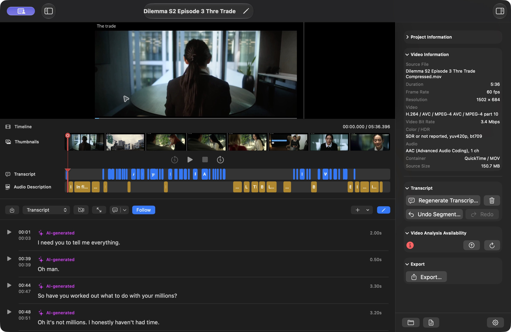
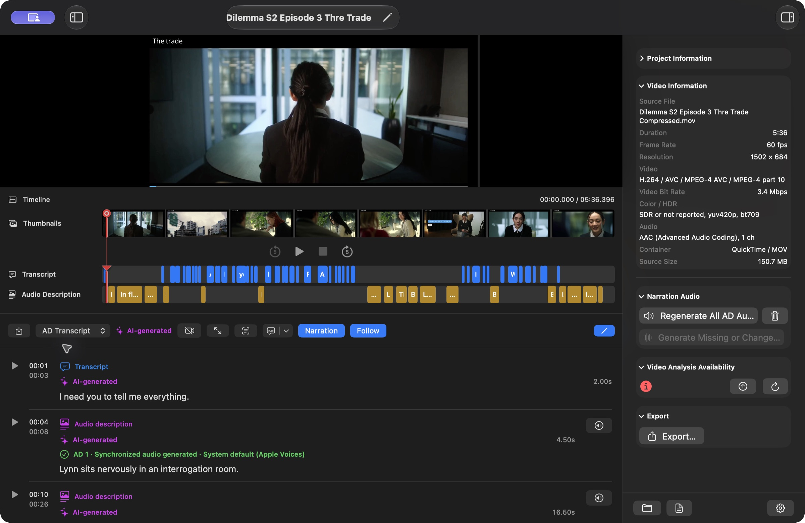
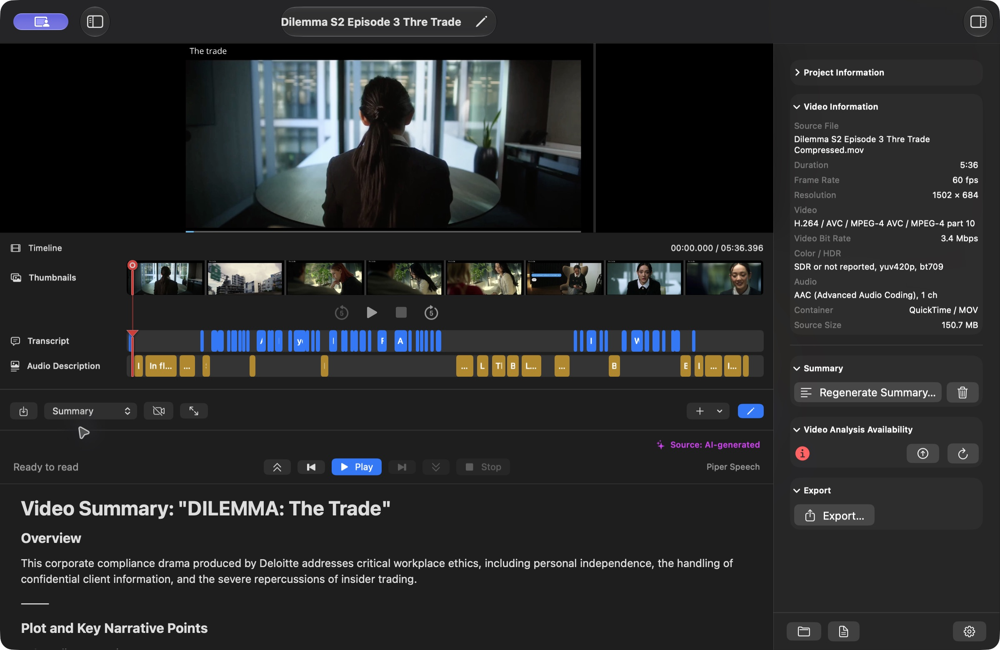

Edit and viewing modes also filter menus. On Transcript, Descriptions and AD Transcript, bulk Select/Deselect, Edit Selected and Delete Selected appear only in Edit mode. Re-Analyze a Video Section and Undo/Redo appear only in Edit mode on Transcript and Descriptions. Add Segment remains available in viewing and Edit modes on Transcript and Descriptions, matching the toolbar. On Summary, reading, reading zoom, generation, import and deletion appear only in viewing mode; Edit > Edit Summary becomes Done Editing Summary while editing. Relevant actions still require their normal selection, content and service prerequisites. Hidden actions cannot run through keyboard shortcuts.
YouTube menus follow the project source. Local-video editors hide Project > YouTube, the top-level YouTube menu and YouTube items in File. YouTube projects show Video Details and Refresh YouTube Details; Import YouTube Captions appears only on Transcript. Import Original Audio is available only for YouTube projects. The YouTube library remains accessible from All Projects, and its List/Table, Open in Editor, refresh and load-more commands appear only while that library is active.
Each project opens in its own editor window. The video preview is above the timeline, the editing section is below, and the Project Inspector is on the right. Use the standard red Close button to close the editor; the All Projects window remains available separately.
Total AD characters appears in the Audio Description inspector section on Descriptions and AD Overview, and in the main AD Overview statistics. It totals the text across every AD segment in the current viewing language and selected description result, including spaces, line breaks and punctuation. Combined characters and emoji count as displayed characters. Segment numbers, timestamps, transcript text and other saved versions or languages are excluded; filtering or selecting rows does not narrow the total. Saving edits, adding or deleting segments, or switching language or saved result refreshes the count. No descriptions shows 0.

A centered row in the timeline has Rewind 5 Seconds, a single Play/Pause toggle, Stop, and Fast Forward 5 Seconds buttons for local and YouTube videos. The Play/Pause button changes with playback state and uses Command-Shift-Space (Mac) / Ctrl-Shift-Space (Windows). The Playback menu uses the same dynamic Play Video/Pause Video action. Stop is hidden before playback starts and after stopping or completion, and remains available while paused. Pause keeps the current position. Stop Video (Command-Shift-Period on Mac / Ctrl-Shift-Period on Windows) pauses video and narration and returns to the beginning. Rewind uses Command-Option-Left Arrow (Mac) / Ctrl-Alt-Left Arrow (Windows), and Fast Forward uses Command-Option-Right Arrow (Mac) / Ctrl-Alt-Right Arrow (Windows). These buttons and the Playback menu use the same actions. Adjust the timeline to seek. Thumbnail images are hidden by default in project editors on Mac and Windows. Choose View > Show Thumbnail Images to show the thumbnail row, or View > Hide Thumbnail Images to hide it. The choice is remembered on this device and applies across project editors. Hiding images keeps the timeline, playback controls, transcript/Audio Description tracks, and keyboard seeking available; it does not delete saved thumbnails or affect project-list images. The separate View > Hide Timeline command hides the whole timeline. These View-menu commands have no assigned keyboard shortcut. When shown, thumbnail frames help identify scenes beneath the preview. Description markers identify Audio Description segments. Hide Preview creates more editing space.
Playback > Jump to Time… (Command-Shift-J on Mac / Ctrl-Shift-J on Windows) opens a Time field at the current playhead position. Enter seconds (83.5), minutes:seconds (1:23.5), or hours:minutes:seconds (01:02:03.500), then choose Jump or press Enter. Times must be between zero and the video duration; invalid or out-of-range values disable Jump. A paused or stopped video moves to that position without playing. A playing video jumps and continues playback. Opening the dialog does not pause playback; Cancel or Escape leaves playback unchanged. Jump is available in project editors with a known duration, including local and online YouTube videos; it is unavailable during processing or when a YouTube connection is unavailable.
Transcript Overlay can show Off, Transcript, or AD Transcript on Transcript, Descriptions, and AD Transcript. AD Transcript combines dialogue and Audio Description text in time order. Narration enables synchronized description playback, while Follow scrolls the active row into view.


On Transcript, Summary, and Descriptions, an icon-only Generate button sits immediately before Add (+) in the editor toolbar, whether the inspector is shown or hidden. It runs Generate Transcript, Generate Summary, or Generate Audio Descriptions for the selected section; when content exists, its tooltip and accessible name change to Regenerate. The same action remains in the inspector. Generation requires a valid Gemini API key and an internet connection, and is unavailable during processing; Audio Description generation also requires a transcript and summary. Successful regeneration selects the new result in its language and preserves earlier saved versions. The viewing language stays unchanged.
When Transcript, Summary, or Descriptions is empty, the content area also offers a full-label Generate Transcript, Generate Summary, or Generate Audio Descriptions button beside the matching Import button. These use the same generation prerequisites and confirmations as the toolbar and inspector. The icon-only toolbar button remains available. Filtering existing segments does not show these empty-content actions.
While Summary is selected, use View > Zoom In, Zoom Out, or Actual Size (100%). Mac shortcuts are Command-= (or Command-Plus), Command-Minus, and Command-0; Windows uses Ctrl-= (or Ctrl-Plus), Ctrl-Minus, and Ctrl-0. Minus, 100%, and plus buttons also sit beside the Summary playback controls. Zoom ranges from 50% to 400%; buttons move in 10 percentage point steps. Trackpad pinch adjusts zoom using the native system gesture (Windows requires a supported precision touchpad or touchscreen).
Hide Preview to show the zoom slider and current percentage at the bottom right of Summary. This reading layout also works in a normal window; macOS/Windows full screen is not required. With the preview visible, the compact playback-row buttons and View commands remain available. These controls apply to the Summary reading view and are disabled during editing or processing. They do not change saved text, exports, video, or other sections. The zoom level stays with the open editor and starts at 100% in a new editor.
Text wraps to the available width at every zoom level. Zoom does not restart or pause reading: selections and sentence/word highlighting stay attached to the same text. Follow keeps the spoken word visible as the text reflows, including within long sentences. Normal vertical scrolling remains available.
In View > Filter Transcript or Filter Descriptions, first choose a Filter type: All segments, Select segment numbers, Segment number ranges, or Time ranges. Select segment numbers lists only existing segments in the viewed saved result; check one or several rows. Selected rows use the system accent color. Segment number ranges provide separate Start segment and End segment fields; both bounds are inclusive and must refer to existing segment numbers. Use Add Segment Range for additional ranges. Time ranges provide separate Start time and End time controls, including milliseconds; use Add Time Range for additional ranges. Choose Overlaps a time range or Fully inside a time range. Touching an overlap range only at a boundary is excluded. Multiple ranges include matches from any range. In AD Transcript, checkbox labels identify each type, and number ranges have a Segment type choice. Origin and Audio further narrow the selected rows. Apply Filter is disabled for an empty checkbox selection, invalid bounds, nonexistent segment numbers, or times outside the video. Apply Filter shows matching rows; Cancel discards the filter draft; Clear Filter restores all rows for that context.
When a filter is active, a Clear Filter icon appears at the right of the section toolbar beside Generate and Add Segment; the same command appears directly below Filter in the View menu. It restores all rows for the current tab, viewed language and saved result while retaining the sort order. When a non-default sort is active, Clear Sort appears beside it and in the Sort menu; it restores Start Time order while retaining the filter. Each icon and menu item disappears when its own setting is inactive. With both settings active, both clear actions are available.
Filter and Sort Options use the language already being viewed. Their only result controls are the relevant Saved Results selectors; they have no Copy, project/generation language, synchronization, or editing-language controls. Changing a saved result reloads filter choices for that result. Filters are kept separately for each tab, viewed language and saved-result combination during the current editor session. Source segment numbers stay unchanged when rows are filtered or sorted. View > Sort Segments > Sort Options… opens a sort dialog with Start Time, Duration — Shortest First, Duration — Longest First, and Origin choices. Direct sort menu commands remain available; sorting changes display order only.
Transcript, Descriptions, and AD Transcript open in view mode. Choose Edit to show selection checkboxes, per-row pencil controls, Selection, Edit Selected, and Delete Selected. Add Segment (Command-Shift-N on Mac / Ctrl-Shift-N on Windows) creates a new Transcript or Audio Description row at the current video time. Right-click a transcript or audio description row and choose Edit Segment to open its timing-and-text dialog directly in view mode. Saving or cancelling this single-segment edit leaves Edit mode off. In Edit mode, the per-row pencil and double-click also open this dialog. Add Segment, generation/regeneration (including selected-range reanalysis), and deletion are available in view mode. Selection controls and bulk editing require Edit mode. In view mode, double-click never opens an editor; playback and navigation remain available. For a bulk edit, select several rows, choose Edit Selected, then choose each selected row in the dialog and save all valid changes together. Selection can include both dialogue and descriptions in AD Transcript. Select All Segments, Deselect All, and Invert Selection apply to the visible section; in AD Transcript, Select All Transcripts and Select All Descriptions target only that kind. Select by Origin lists only labels present in the section, and Descriptions/AD Transcript also offer descriptions with audio or without audio. View > Filter Transcript, Filter Descriptions, or Filter AD Transcript opens the matching origin and audio filter; filtered rows remain untouched in the project. View > Sort Segments orders the visible rows by start time, shortest or longest duration, or origin without changing their saved order; its menu label changes to Sort Transcripts, Sort Descriptions, or Sort AD Transcript for the active section. Filter and sort commands are hidden outside the timed sections. Set Origin relabels every selected row and keeps that manual choice; Shift Timing moves the whole selection earlier or later without changing its duration; Merge Selected combines consecutive transcript rows. On Descriptions or AD Transcript, Generate Audio for Description or Generate Audio for Descriptions creates audio for only the selected descriptions, one after another using the currently selected narration voice; selected transcript rows are ignored and new audio is saved as an alternative for review. Delete Selected always asks first; deleting descriptions removes their narration from the selected result. Files shared with retained results, drafts, or histories remain stored. Choose Done to return to view mode.
Every transcript and audio description row shows a segment number before its start and end times, in both view and Edit mode. Numbers begin at 1 within each content type in the selected language and saved result. AD Transcript keeps separate Transcript and Audio Description numbering, matching their own tabs. Filtering and sorting retain these numbers, so visible rows can skip numbers or display them out of order. Adding or deleting rows, or switching saved results, can change the sequence. Segment numbers are navigation references in the editor; they do not add numbering to exported text or change timing. Screen readers announce the content type and segment number.
Project > Segments mirrors these actions in the menu bar. It includes Edit or Done, the section-appropriate Add Segment command, Select All, Deselect All, Edit Selected, Delete Selected, Follow, Undo, and Redo. Menu commands and their displayed keyboard shortcuts enable only when they apply to the current section, edit mode, and selection.
Deleting transcript or Audio Description rows removes only those annotations and the selected descriptions’ narration; it does not cut video or original audio, shorten the video duration, or shift any remaining timestamps. You can remove a song’s transcript and descriptions from the middle of a video and leave a gap. Existing timing conflicts in unselected rows do not block deletion. New or edited rows still need valid times inside the video and must not overlap other rows of the same type; descriptions must also avoid transcript dialogue. Existing description timing warnings are recalculated after deletion.
Generate the summary with the icon-only button before Add (+) in the Summary toolbar or with the inspector action, import one from New Project or Import Existing Assets, or write it here. Choose Edit in the toolbar or Edit Summary to open the summary editor. It shows the word and character count, a Provenance picker, the formatting toolbar, the Markdown text area, and an optional rendered preview. Choose Done to save and return to the reading view, or Revert to discard the current edits. The Provenance picker offers AI-generated, Imported, and Manually added; a summary without a recorded choice shows Origin unknown until you choose one of those labels.
The toolbar provides Bold, Italic, Strikethrough, Inline Code, Paragraph, Heading 1 through Heading 6, Blockquote, Code Block, Bulleted List, Numbered List, Task List, Link, Image, Table, Horizontal Rule, Clear Formatting, Preview, Markdown Help, Undo, and Redo. Preview shows or hides a rendered copy beside the editor and updates as you type. Markdown Help opens a shortcut cheat sheet. Lists continue when you press Return, including task and numbered lists.
| Action | Mac shortcut | Windows shortcut |
|---|---|---|
| Bold | Command-B | Ctrl-B |
| Italic | Command-I | Ctrl-I |
| Strikethrough | Command-Shift-X | Ctrl-Shift-X |
| Inline code | Command-Option-` | Ctrl-Alt-` |
| Code block | Command-Option-Shift-C | Ctrl-Alt-Shift-C |
| Link | Command-K | Ctrl-K |
| Image | Command-Shift-I | Ctrl-Shift-I |
| Heading 1–6 | Command-Option-1–6 | Ctrl-Alt-1–6 |
| Paragraph | Command-Option-0 | Ctrl-Alt-0 |
| Bulleted list | Command-Shift-8 | Ctrl-Shift-8 |
| Numbered list | Command-Shift-7 | Ctrl-Shift-7 |
| Task list | Command-Shift-9 | Ctrl-Shift-9 |
| Blockquote | Command-Option-Shift-Q | Ctrl-Alt-Shift-Q |
| Table | Command-Option-T | Ctrl-Alt-T |
| Horizontal rule | Command-Option-Hyphen | Ctrl-Alt-Hyphen |
| Clear formatting | Command-Option-Shift-K | Ctrl-Alt-Shift-K |
| Preview | Command-Option-Shift-P | Ctrl-Alt-Shift-P |
| Markdown Help | Command-Option-Shift-M | Ctrl-Alt-Shift-M |
| Undo / Redo | Command-Z / Command-Shift-Z | Ctrl-Z / Ctrl-Shift-Z |
On Windows, Command maps to Ctrl and Option maps to Alt. These commands are local to the summary editor; there is no Format menu. While it is active, Project List View and Project Grid View are disabled because Command-Option-1 and Command-Option-2 insert Heading 1 and Heading 2. The same combinations are Ctrl-Alt-1 and Ctrl-Alt-2 on Windows.
Markdown supports headings, paragraphs, bold, italic, strikethrough, bulleted, numbered, and task lists, blockquotes, inline and fenced code, links, tables, and horizontal rules. Image Markdown is accepted but appears as alt text and a link in the rendered preview; embedded remote images are not loaded. Math, Mermaid diagrams, and footnotes are not supported.
The Edit menu contains only VidiStudio commands on Mac and Windows, with icons for application actions. Mac’s default Undo/Redo, Cut/Copy/Paste, Delete/Select All, AutoFill, Start Dictation and Emoji entries are omitted. Standard text-field keyboard shortcuts for cut, copy, paste, select all, undo and redo remain available; segment editing uses its documented application shortcuts.
Application actions in File, Edit, View, Playback, Project, YouTube and Help show icons, including New Project, Open Project Folder, My YouTube Videos, Settings, imports and section navigation. Existing action labels, keyboard shortcuts and availability remain the same.
In Edit mode on Transcript, Descriptions, and AD Transcript, the Edit menu lists the individual-row actions after Select All Segments and Deselect All Segments. Select exactly one visible segment to enable its actions. With no selection or more than one selected segment, those individual actions are disabled. Delete Selected Segments… is the exception: it is enabled for one or more selected segments and confirms deletion of the whole selection. Existing bulk editing remains under Project > Segments.
The Edit entries and row right-click menus follow the current tab and row type. Transcript rows offer Edit Transcript Segment…, Play from Transcript, Skip to Transcript, and Re-Analyze This Segment…. Audio description rows offer editing, play and skip plus Synthesize This Segment or Regenerate Segment Narration, Rewrite to Fit, Import Narration Audio…, and Delete Segment Audio…. On AD Transcript, selecting a transcript row shows transcript actions; selecting an audio description row shows description actions. Playback > Segment Narration groups the selected segment’s audio controls separately from video playback. One Play Narration action becomes Pause Narration while playing and Resume Narration when paused. A separate Stop Narration appears only while that segment has active or paused narration and disappears after stopping or completion. The segment row uses the same single primary button and conditional Stop button. These Playback entries appear only in Descriptions or AD Transcript Edit mode and require exactly one audio description selected. The same controls appear in audio description row right-click menus in viewing and Edit modes. Starting requires usable saved audio, matching the row button; missing or outdated audio disables Play. Pause/Resume and Stop require that row’s active narration, audio deletion requires an attached recording, and Gemini actions require available Gemini access. Row context menus separate editing, video navigation, narration playback, creation/import and deletion with dividers. Delete Segment Audio and Delete Segment are together in the final group; transcript rows show only their applicable groups. Right-click actions remain available in viewing mode for the clicked row. The Edit menu’s individual-row entries appear only in Edit mode and are absent from Summary and AD Overview. These entries add no new shortcuts.
The editor toolbar includes an Import Existing Assets button, and Project > Import > Import Existing Assets… opens the same sheet. Use it to add or replace a transcript, summary, AD transcript, or AD audio without starting a new project. YouTube projects also offer a separate original-audio file. Each imported description is labelled Imported, and editing it changes the label to Imported · modified. The six description origin labels are AI-generated, AI-generated · modified, Imported, Imported · modified, Manually added, and Origin unknown; AD Overview counts all six.
Imported description timing is checked against the transcript and the other descriptions. A description that overlaps dialogue or another description keeps its text and times but receives an Overlap badge and is counted in the persistent Description timing needs attention banner. The banner opens Review Descriptions and, when a recent import produced it, Import Report. Described video, described audio, narration-only audio, and audio combining stay disabled until the timing is resolved; text exports remain available.
Project Information and Video Information remain available below Language and Saved Results on every editor section. Project Information shows the name, Local Video or YouTube type, complete project-folder size, and folder location. Video Information identifies the actual source file or YouTube URL, then shows the known duration, frame rate, resolution, video and audio formats, container, and source size. Generate or Regenerate Metadata & Thumbnails refreshes technical video details without AI. Technical stream details that are unavailable for a URL-only YouTube project are clearly marked Not available, and its source size states that the video is not stored locally.
Below these information groups, the inspector exposes only actions related to the open section. Transcript shows Generate or Regenerate Transcript; Summary shows Generate or Regenerate Summary; Descriptions shows Generate or Regenerate Audio Descriptions plus narration controls; AD Overview shows narration controls; AD Transcript has no generation controls. All Projects offers full-project and individual analysis under Project > Analysis and the selected project's contextual Analysis menu. Editor menus follow the active tab and Edit/View mode: Transcript and Summary generation are under Project > Analysis, and Descriptions generation is under Project > Narration > AD Segment Generation. Video details and timeline pictures remain project-wide. Export remains available on every section, with Created Exports directly below it in the same group. A fixed bottom bar places Show Project in Finder on the left and Settings on the right.
In Descriptions and AD Transcript, this AI action extracts text from the current frame. Review the result before using Add as Description, which creates a new draft and is available in view mode. Inside an audio description segment editor in either section, it reads the frame at the segment start and replaces the draft text.
Processing, an editing sheet, or missing prerequisites can temporarily disable actions. Selection commands require edit mode and available rows; Edit Selected and Delete Selected additionally require at least one selected row. Summary Play or Resume requires readable summary text and stops being available while speech is already playing; Pause is available only while speech is playing; Stop is available while summary speech is active. Audio Description generation requires a completed or imported transcript and a summary; a completed empty transcript is valid for dialogue-free content. Manual descriptions can be added and edited without transcript rows or an API key, including dialogue-free projects and language categories without a transcript. Timing must stay inside the video and avoid other descriptions and any available transcript dialogue; review the source soundtrack when no transcript is available. Narration preview requires synchronized saved audio. Imported assets require no API key. SRT, VTT, and TXT timing is validated before import; TXT must be reviewed, and SRT/VTT timing warnings offer Import Anyway or Review Timing. With generated narration selected, described exports require current narration for every description and no unresolved description timing; text exports require only content of the selected type.
The Add button in the editor toolbar follows the active section. On Transcript it offers Add Transcript Segment and Import Transcript; on Summary it offers Write Summary and Import Summary; on Descriptions it offers Add Audio Description Segment and Import Descriptions. Only the options for that section are shown. Project > Import contains the same scoped commands plus Import Existing Assets for all asset types.
Audio Sources is available in the editor toolbar and inspector. It shows the imported filename and distinguishes Playing, Export source, Transcription source, and AD source. Existing transcripts and completed exports retain their actual source labels even after you change a preference.
Use for exports only keeps YouTube audio during playback. Use for playback and exports mutes YouTube audio and plays the imported original audio in sync with the video, including pauses, seeks, buffering, and playback speed. Narration lowers the active soundtrack volume while speaking. You can return to YouTube audio at any time.
Language filters are available in project browsing, the editor project list, saved-result review, segment filters, and Created Exports. Project browsing matches projects containing results in the chosen language. All Languages includes every category, including Auto. Editing and playback use one chosen language and saved result. Project > Language and Saved Results… opens the same controls without requiring the inspector to be visible. Segment filters also include language and result selection alongside the existing origin and audio filters.
Successful generation, regeneration, segment reanalysis, and Rewrite to Fit automatically save and select the new result for its language in Transcript, Summary, or Descriptions. Earlier versions, narration, exports, and edit history remain available. If the result matches View Project Language, it appears immediately; a result generated in another language becomes that language’s selected version without changing the language you are viewing or independent generation targets. Switch View Project Language to inspect it. Auto remains a separate category. Analyze Video and Regenerate All select each successfully completed section in the same way. Use the section’s Saved Result picker to compare or return to an earlier version. Failed or cancelled work keeps the previous selection and retains available checkpoints as review drafts, including after reopening. For pending imports and recoverable drafts, Review… offers Keep Both, Replace Selected, or Discard New; Keep Both is the default and Review Later retains the draft. A completed narration run also selects its new saved version, including successful audio when another segment fails. Failed segments retain their issues; interrupted narration remains a recoverable draft.
A segment is one timed transcript passage or Audio Description, such as AD 3 from 00:02:04.000 to 00:02:14.000. A saved result is a version of one content type in one language category. A Descriptions and Narration result contains a set of description segments and their attached narration recordings; it is not a separate copy of the entire video project. Transcript, Summary, Descriptions and Narration, and Imported AD Audio have independent saved results.
Viewing languages and choosing saved results do not require Edit mode. Save or cancel pending summary edits first; switching is unavailable during processing. Successful generation, regeneration, segment reanalysis, Rewrite to Fit, and narration select the new saved version for that language automatically while retaining previous versions. A different target language does not change View Project Language. Review drafts appear directly in Saved Results with a Review draft label. Selecting one keeps and selects it as an alternative without replacing earlier versions. Use Review… to compare an unselected draft before deciding whether to keep, replace, or discard it.
The version picker currently shows the version, origin and creation time; it does not provide a complete per-version file list or audio count. Select a description version and inspect AD Overview and its segment rows for generated, missing or changed narration. Listen to the recordings to check their content and fit. Nine description segments do not guarantee nine usable narration recordings: an earlier version may have text for all nine but audio for only six. The current voice shown in the inspector applies to new speech generation; saved recordings retain their own voices.
To find exported files, open Created Exports in the inspector, choose an Export language filter, then choose the version in Saved result filter. This shows recorded exports associated with that result. It does not regenerate or retarget existing exports, and an empty filtered list does not mean the result has no segment audio. Exports made before result associations were recorded may appear only under All Saved Results.
Show Project in Finder on Mac, or the project-folder action on Windows, opens the portable project folder. Assets are grouped by language and version where possible. Versions can reuse the same recordings: Shared Results contains shared assets, so one version folder alone is not a complete file manifest. Saved text, timing and result links are stored in project.json. Keep the whole project folder together; do not move or remove individual files manually.
In Export > Languages and Saved Results, each language and content picker chooses the version for that export only. These choices do not change the active version in the editor, and keeping several versions does not export every version. Choose the newest or an older preferred result deliberately and check its narration readiness before exporting.
Delete Content by Language is for removal, not for browsing or activating a version. A checked row means selected for deletion; it does not mean newest or active. Description Audio Only (Keep Segments) removes narration associations from the checked description results while keeping their segment text, timing and undo history. Description Segments and Audio removes the checked description results and their segments, including associated narration. Segment Undo History Only removes undo/redo states while keeping current content. Exports are removed only when selected separately; thumbnails are project-wide. Files still referenced by retained results, review drafts or history remain stored. For example, checking Versions 1–6 and leaving Version 7 unchecked with Description Audio Only removes narration associations from those six results and leaves Version 7 unselected; shared physical files may remain. Review the affected results, exports and physical file count before confirming the permanent deletion.
Edit mode: Select the tab you want to work on, then use its toolbar Edit/Done button or the matching command in the inspector’s Language and Saved Results controls. The inspector stays visible and switches to Done Editing while editing. On Descriptions, choose Edit > Edit Audio Description Segments, directly after Copy and Translate…, or Edit > Done Editing Segments to finish. These controls and Project > Segments share the same editing state. Use Command-Option-E (Mac) / Ctrl-Alt-E (Windows) to toggle the active editable section. Language and Saved Results shows transcript controls on Transcript, summary controls on Summary, and description/narration controls on Descriptions. AD Overview shows description/narration results; AD Transcript shows its transcript and description sources. Only View Project Language is a shared project setting. View Project Language and saved-result selection are available in view mode. Changing section generation targets, using Keep All Sections in Sync, and assigning a language label require Edit mode. Save or cancel pending summary edits before changing languages or saved results. Choosing a target does not translate existing content; generate a result to create text in that language.
Transcript Generation Language, Summary Generation Language, and Descriptions and Narration Generation Language each have their own target-language picker in Language and Saved Results. Choose a specific language or Auto independently for each section. For example, a Hindi video can have an English transcript, a Hindi summary, and Marathi descriptions. Follow Project Language is optional for each section; those generation targets follow View Project Language for future requests, while explicit targets stay independent. Viewing always uses View Project Language across sections. Keep All Sections in Sync returns every section to Follow Project Language without deleting saved results. AD Transcript uses the chosen transcript and description results; narration stays attached to its description version.
Use View > Project Language or the View Project Language picker in the right inspector or Project > Language and Saved Results to switch the language being viewed. AD Overview follows this same selection automatically, including description counts, total AD characters, transcript counts, origins, timing, audio readiness, and narration voices. There is no separate overview language picker. Choose a saved description/narration result for that viewing language when several versions exist. A language with no saved content shows zero counts. Viewing switches remain available without Edit mode; generation targets and language assignment remain in Edit mode.
On Mac and Windows, choose Edit > Copy and Translate…, use the section’s Copy and Translate button in the inspector's Language and Saved Results controls, or right-click in the editor. The inspector provides one button named for the active section: Copy and Translate Transcript…, Copy and Translate Summary…, or Copy and Translate Descriptions…. Its dialog initially selects only that section’s content. Edit > Copy and Translate… keeps its generic name and initially selects Transcript, Summary, and Descriptions and Narration. Change any available content choices before continuing. AD Transcript initially selects both transcript and descriptions; AD Overview uses descriptions when the copy action is available. Translate Text is on by default. Choose Source Language (including Auto for automatic source-language detection), a specific Target Language, and Transcript, Summary, or Descriptions and Narration. Choose any combination or Select All, select the saved versions to use, then choose Translate and Copy.
To copy individual segments, select one or more rows in Edit mode, then choose Edit > Copy and Translate… or use the inspector’s section-specific Copy and Translate button. Individual segment right-click context menus and More Actions (ellipsis) menus do not include Copy and Translate. When rows are selected, Selected Segments Only is available but off by default; turn it on to limit the operation to those rows. Selected segments use the current viewing language and saved result. Translations preserve segment IDs, timing, speaker identities and Markdown structure. They create new saved target versions and preserve every source and previous target version. The viewing language stays unchanged; select the target in View Project Language to inspect it.
Translation requires a valid Gemini API key and internet connection. Only the selected saved text is sent to Gemini using the configured text-rewrite model; translation does not upload video or audio. Every selected item must translate successfully before new versions are saved. Translated results start without source-language undo history or narration recordings; generate target-language narration separately and check that it fits the preserved slots. Original audio and history remain with the source version. Save or cancel pending summary edits first; copying is unavailable during processing, and empty content or review drafts cannot be copied.
To duplicate text unchanged, turn Translate Text off, choose a different target category (including Auto when the source is another category), and choose Copy. Source and target languages must differ for both actions; Translate and Copy and Copy stay disabled when they match. Duplication works offline without an API key and preserves attached narration. Whole-result duplicates retain history; segment-only duplicates omit unrelated history. Auto is a source/category choice, not a translation target. Standalone imported AD audio, exports, source media and thumbnails are excluded from both actions.
While Copy and Translate runs, the status bar shows Copying content or Translating content, a progress bar and Cancel Processing. A spinner beside the bottom editor-section selector and in the affected section shows that it is working. Every selected content type stays marked as processing until the new versions are saved; unaffected sections remain available to view. Translation progress advances after completed text batches and can pause while waiting for Gemini. The saving stage completes before the indicators disappear. Cancellation or failure clears the indicators and preserves existing results.
View > Project Language on Mac and Windows lists the same stored-result language categories as the inspector and marks the current choice. Auto remains a separate category. Select a language to switch the content viewed across all editor sections without entering Edit mode. Categories containing only review drafts or empty results remain available. The submenu is unavailable while processing or when summary edits need saving or cancelling. Changing the viewing language does not change the selected speech engine, voice or independent section generation targets.
The Narration Audio inspector displays Engine, Language and Voice, in that order, on Summary, Descriptions, AD Overview and AD Transcript. Language belongs to the selected narration voice, including its dialect, independently of View Project Language. Gemini voices show Multilingual; unavailable voice metadata shows Unknown. With System default, the language comes from the resolved default voice. The engine and voice are the current app Narration choices. These details are read-only. Narration generation controls remain on Descriptions and AD Transcript; AD Overview retains its existing narration controls in the main view.
The segment editor keeps its heading and Cancel / Save Segment buttons visible while the form scrolls. On Mac it fits the project window and available screen area, opening at Timing with Start time accessible. On Windows the native dialog keeps its title and action buttons outside the scrolling form.
The timeline shows current time / total duration in HH:MM:SS.mmm format. Video durations include milliseconds in HH:MM:SS.mmm format for local videos and YouTube projects. This format appears in Video Information, Project Settings source details, project list/grid/sidebar duration labels and YouTube video lists/details. Durations round to the nearest millisecond. If YouTube metadata supplies only whole seconds, the fraction is .000; the embedded YouTube player controls use YouTube’s own display format.
Transcript and Audio Description segment editors show a timing error with the video duration if either start or end is outside the video. Save Segment (and Save All on Mac) stays disabled until all timing errors are corrected. Entered times beyond the limit remain visible for correction.
When a timing error appears, the segment dialog adds Show Description, Show Transcript, or Show Validation Issues beside its existing Cancel and Save controls. The label follows the affected rows, including conflicts in the other section. Each overlap message includes the affected Transcript or Audio Description segment number, precise start/end times, and text excerpt (for example, “Overlaps audio description segment #4 00:00:40.000 to 00:00:44.000”). Numbers match the selected language and saved result’s per-type row numbers, even when rows are filtered or sorted. Activate it or press Command-Option-V (Mac) / Ctrl-Alt-V (Windows). The same action is in the button’s context menu. VidiStudio temporarily hides the dialog, opens the relevant Transcript or Descriptions section, scrolls to each conflicting row and highlights it for two seconds in chronological order. It then returns to the dialog with the unsaved text, timing, provenance and Gemini hint preserved. Filters are retained; a hidden conflicting row is temporarily revealed. Choose Return to Edit or press Escape to end the showcase early. Its context menu offers the same action. No edit is saved by this showcase. A timing error without a conflicting row, such as an end before the start or a time outside the video, is highlighted inside the dialog instead. Cancel and Save retain their existing behavior.
In a project editor on Mac and Windows, choose File > Delete Project… to move the complete project folder to the Bin or Recycle Bin after confirmation. Choose File > Choose What to Delete… to open Delete Content by Language, where you can select languages, saved results, content types and optional exports. These commands target the active editor project, or the visible selected project when All Projects is active. They are disabled during processing or pending editor summary edits, and have no shortcut. Remove from List keeps project files on disk.
After confirmed deletion begins, an indeterminate spinner and deletion status identify the project in both All Projects and editor windows. The indicator stays active until file removal and the project refresh finish, then clears on success or error. Moving the whole folder runs off the UI thread. Section/result deletion uses the engine and preserves shared files still referenced by retained results, drafts or history. Deletion has no estimated percentage or Cancel Processing control; small operations may finish quickly. Bin/Recycle Bin projects can be restored until the bin is emptied; confirmed content deletion is permanent.
Successful whole-project deletion closes every editor window for that project and keeps All Projects available; it does not switch an editor to another project. Cancelling or failing deletion leaves the project open. Deleting selected content or sections keeps the project editor open.
Saved-result options in the inspector, Export dialog, Delete Content by Language dialog, and View menus show icons before the version name: a check circle means Selected, a speaker means All AD segments have audio, and an export arrow means Export ready. VoiceOver and Narrator announce these status names with the version name. Selected in Export means selected for that export; it does not change the editor selection. In Delete Content by Language, the Selected icon identifies the current saved result and is announced as “Selected (current saved result)”; the separate checkbox controls whether that result will be deleted. Audio and export status icons describe that result’s recordings and readiness, independently of the deletion checkbox. Review drafts can show available audio but are not marked Export ready until saved. Native View menu items announce icon status names with the version name.
Audio status checks each saved result’s own recordings, including file availability and whether narration matches its text and timing. Description export readiness also requires no overlaps with other descriptions or the selected export transcript (or active transcript) in that language. Transcript and summary readiness means text is available; imported AD audio requires an available, nonempty file. The Export dialog still validates the final media format and track combination.
The View saved-results menu and the matching inspector and project-settings pickers list every stored version for the current section and viewing language, including Review draft results and versions that are not export ready. Choose any version to switch to it. Choosing a review draft keeps and selects it as a saved alternative, just like Keep Both; earlier versions, edit history, and media remain available. Unselected drafts remain available for Review, Replace Selected, or Discard New. Export readiness is a status indicator and never hides an editor choice. Actual export selections still require saved results and valid media.
Use View > Transcript Saved Results, Summary Saved Results, Description Saved Results, or AD Transcript Saved Results, depending on the active editor tab. Versions appear directly in that menu, without an additional content-type submenu. The inspector uses the same Transcript Saved Results, Summary Saved Results, and Description Saved Results labels; imported audio has its own Imported AD Audio Saved Results picker. When the current tab uses two kinds of content, menu entries include their content kind to distinguish versions. The saved-results menu follows the active editor tab and project language: Transcript shows transcript versions, Summary shows summary versions, Descriptions and AD Overview show description/narration and imported AD audio versions, and AD Transcript shows transcript and description versions. Changing the tab or project language refreshes the list and selected indicator. It changes the same selection as the inspector and is disabled while busy or while summary edits are unsaved.
The inspector shows a green check when every AD segment in the selected description result has usable text and narration audio, and a red cross if any segment is incomplete. Missing, empty or unavailable recordings, narration that needs regeneration, empty description text and invalid segment timing keep the status red. No AD segments also shows red. A count such as Hindi · 17/18 AD audio identifies the language and complete segments.
AD audio checks, crosses and per-language audio counts appear beside Export only on Descriptions, AD Overview and AD Transcript. Descriptions and AD Overview also show the active language status in the Audio Description inspector section. On Transcript, the Export status instead shows the number of transcript segments in the selected result; on Summary it shows the summary character count. Transcript counts include generated, imported and manually added rows in that result. Summary characters include the stored Markdown text, spaces, line breaks and punctuation; combined characters and emoji count as displayed characters. Empty content shows 0. The check is green when nonempty text is available in the selected result and red otherwise, independently of AD narration. The icon reports the current language, and the rows below use the same content type for each language’s selected result. Languages containing only other content types are excluded. A complete English result does not mark incomplete Hindi narration ready, and an unselected complete version does not hide issues in the selected one. Screen-reader names and tooltips include the language and counts. These are status indicators, not buttons. Export remains available for standalone text and original-audio choices; described audio/video still use their existing narration requirements. Empty generated results and rows containing only whitespace do not enable transcript, summary, description-text or caption exports, and are not marked Export ready. Export itself remains available for original video/audio; media export does not require text. The export dialog validates the selected saved results before saving.
Created Exports lists each language first, then Video, Audio, Text and Subtitles, and Web Playback beneath it, retaining the file-type icons and information actions. A file containing several languages appears once under Multilingual, with its included languages shown. It is not duplicated under each language. The Export language filter offers All Languages and only languages represented by the project’s exports. Multilingual exports contribute every included language and remain visible when filtering by any of them. Auto appears only when an export uses Auto or an older export has no language information. Unused generation languages and stale export metadata do not add choices. If the last output in the selected language is removed, the filter returns to All Languages.
Summary right-click reading commands match across desktops: the Play button offers Read from Start, Read from Selection, Read Selected Text Only, Edit Summary…, then Stop. Summary text offers Read Summary from Here, Read Selected Text, Pause Summary Reading or Resume Summary Reading, and Stop Summary Reading, followed by native text commands. The clicked position or selection determines the reading start. The editor background offers Copy and Translate… where supported, then Open Project Settings…. AD Overview omits Copy and Translate. Windows supports the Menu key or Shift+F10 for context menus. Native spelling, clipboard and text-editing commands follow platform conventions.